투고 중
Manuscript, 2026, Submitted
학술논문과 원고
표면화학, 원자 모델링, 촉매 및 에너지 소재에 관한 연구 성과입니다.
연구 실적 · 이용혁
최신 인용 지표는 Google Scholar 프로필에서 확인할 수 있습니다.
Google Scholar ↗연구 영향력
연간 인용 수 · Google Scholar
올해의 인용 수는 현재까지의 누적 값입니다.
전체 36건 · 게재 논문 30건 · 게재 확정 3건 · 투고 중 3건
36건
검색 결과가 없습니다. 다른 검색어를 입력하거나 전체 연도를 선택해 주세요.
투고 중
Manuscript, 2026, Submitted
투고 중
Manuscript, 2026, Submitted
투고 중
Manuscript, 2026, Submitted
게재 확정
Advanced Energy Materials [IF=25.5], 2026, Accepted
게재 확정
ACS Nano [IF=17.3], 2026, Accepted
게재 확정
Chem Catalysis [IF=10.7], 2026, Accepted
게재 완료
Journal of Materials Chemistry A [IF=9.2], 2026, 14, 34600–34612
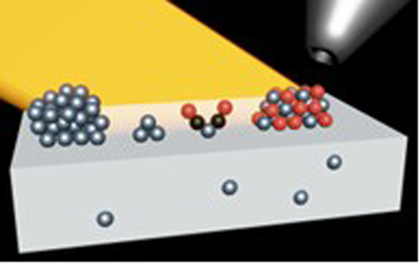
게재 완료
Nature Communications [IF=18.1], 2026, 17, 9096
게재 완료
Journal of Materials Chemistry A [IF=9.5], 2026, 14, 27568–27576
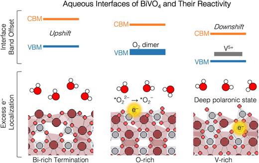
게재 완료
ACS Catalysis [IF=13.1], 2026, 16, 10398–10410
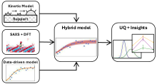
게재 완료
Computational Materials Science [IF=3.3], 2026, 268, 114666
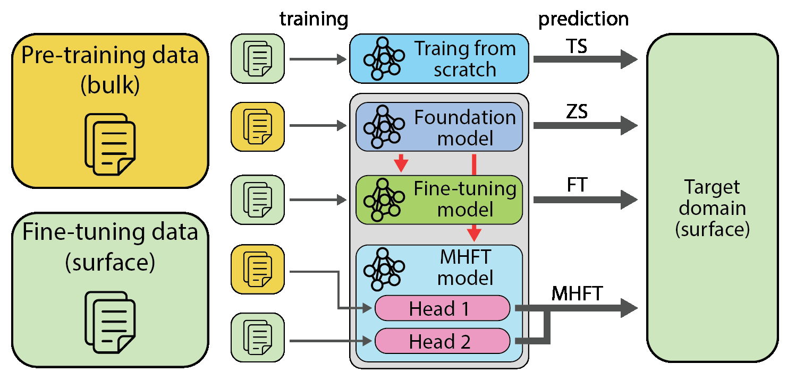
게재 완료
ACS Applied Materials & Interfaces [IF=8.2], 2026, 18, 12156–12168
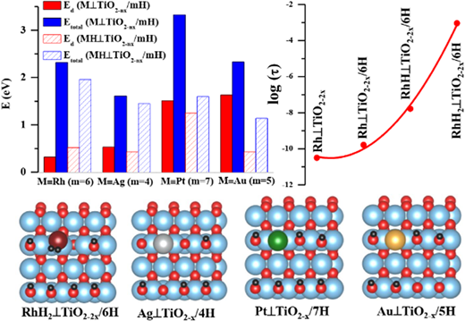
게재 완료
Journal of the American Chemical Society [IF=15.6], 2025, 147, 43273–43285
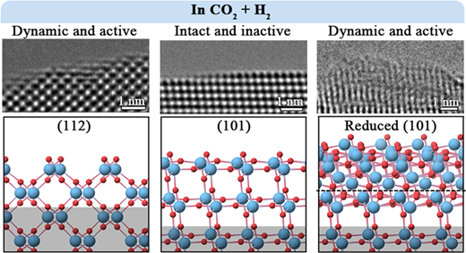
게재 완료
ACS Catalysis [IF=13.1], 2025, 15, 12576–12589
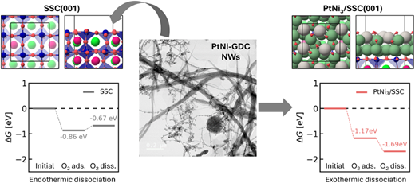
게재 완료
Advanced Materials Interfaces [IF=4.3], 2025, 12, 2500207
게재 완료
Journal of Materials Chemistry A [IF=10.8], 2025, 13, 22527–22538
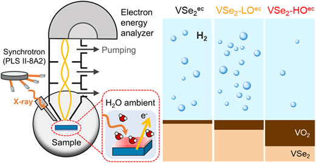
게재 완료
Angewandte Chemie International Edition [IF=16.1], 2025, 64, e202501017
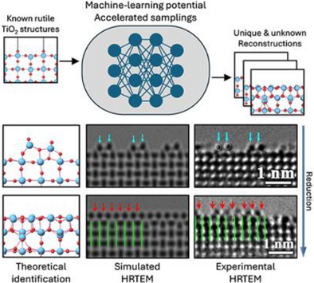
게재 완료
Nature Communications [IF=14.7], 2025, 16, 2593
게재 완료
Journal of the American Chemical Society [IF=14.5], 2025, 147, 7799–7808
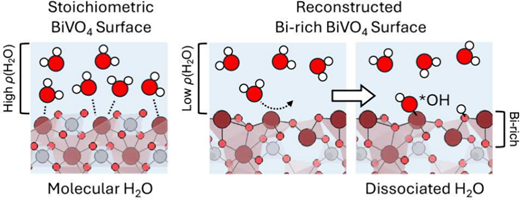
게재 완료
Energy & Environmental Science [IF=32.4], 2025, 18, 1214–1231
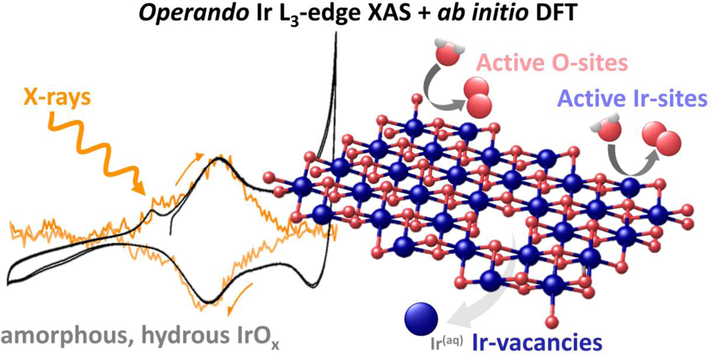
게재 완료
ACS Catalysis [IF=12.9], 2024, 14, 9018–9033
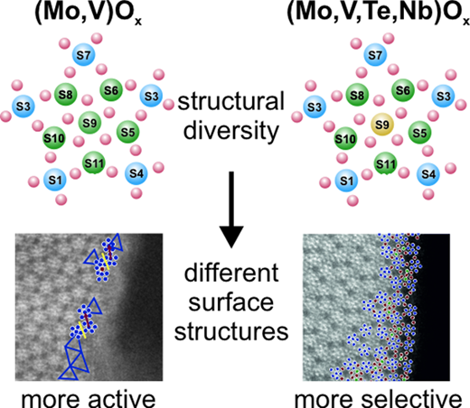
게재 완료
The Journal of Physical Chemistry C [IF=3.7], 2023, 127, 17599–17608
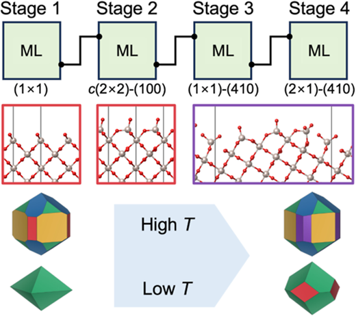
게재 완료
ACS Energy Letter [IF=22.0], 2023, 8, 3381–3386
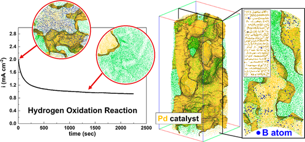
게재 완료
The Journal of Chemical Physics [IF=4.304], 2023, 158, 224115
게재 완료
Applied Surface Science [IF=7.392], 2023, 613, 155913
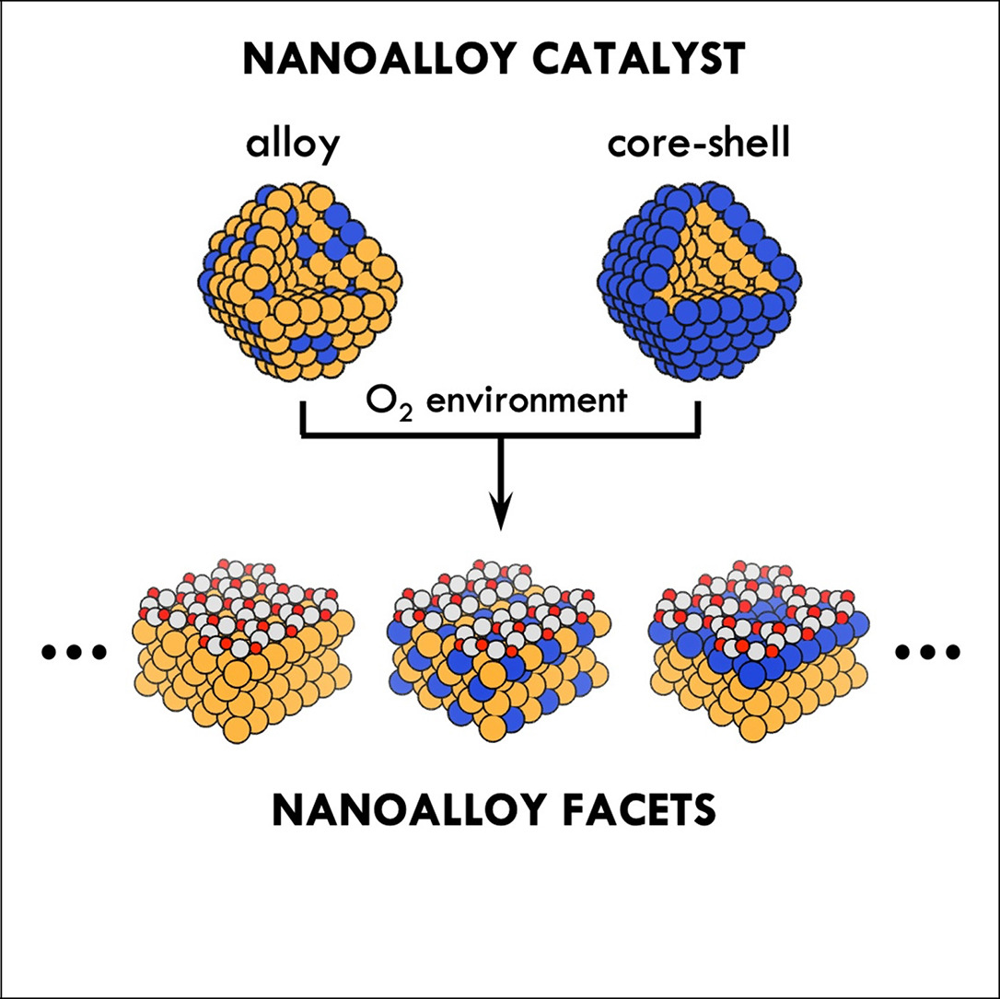
게재 완료
ChemSusChem [IF=8.928], 2022, 15, e202200015
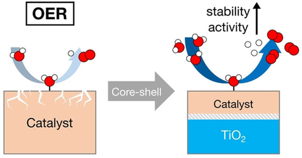
게재 완료
The Journal of Chemical Physics [IF=3.488], 2021, 155, 244107
게재 완료
Physical Review Letters [IF=8.385], 2020, 125, 206101
게재 완료
Advanced Energy Materials [IF=21.875], 2019, 9, 1803795
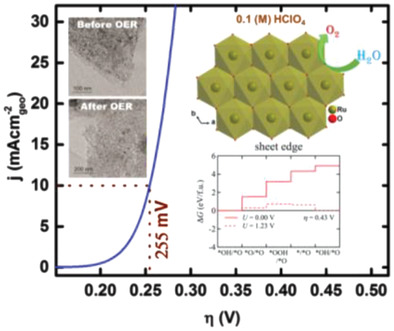
게재 완료
The Journal of Physical Chemistry C [IF=4.484], 2018, 122, 21644–21650
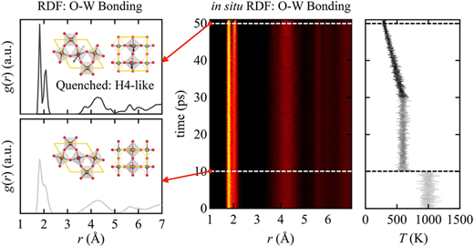
게재 완료
The Journal of Physical Chemistry C [IF=4.536], 2019, 122, 3558–3566
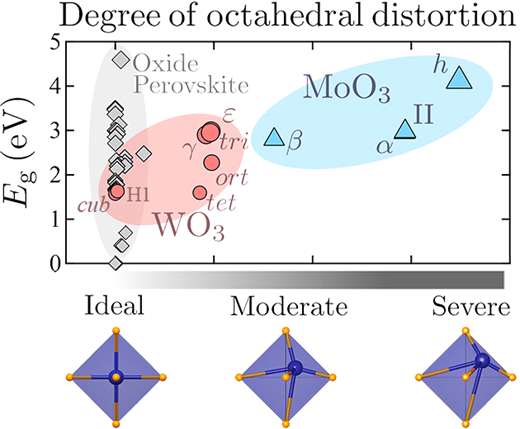
게재 완료
Physical Review Applied [IF=4.061], 2017, 7, 024025
게재 완료
The Journal of Physical Chemistry C [IF=4.509], 2017, 121, 2228
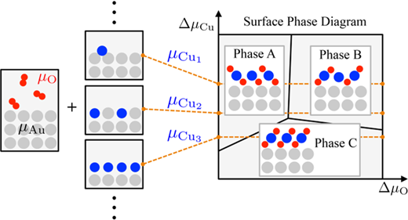
게재 완료
Journal of Materials Chemistry A [IF=8.262], 2016, 4, 11498
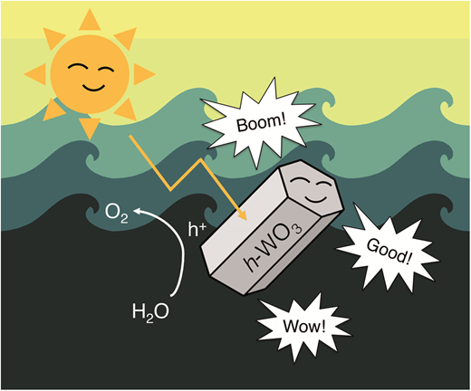
게재 완료
Chemistry of Materials [IF=9.407], 2016, 28, 4528
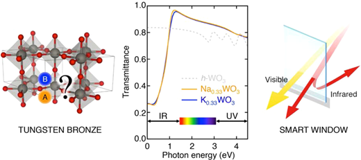
게재 완료
Physical Chemistry Chemical Physics [IF=4.493], 2016, 18, 7349
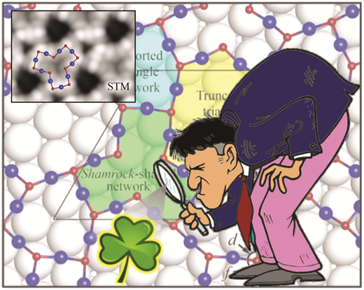
IF: 출판 당시 공개된 최신 JIF. Accepted 논문은 현재 최신 JIF(2026년 10월 확인).
서지 정보와 원고 상태는 CCML 논문 목록을 기준으로 정리했습니다(2026년 10월 17일 확인). 동국대학교 부임 이전의 연구를 포함합니다. 논문 제목·저자·학술지 정보는 원문으로 표기합니다. 34번 논문의 Advanced Energy Materials 게재 확정은 저자 확인으로 반영했습니다(2026년 10월 26일).